月と星をきっかけに、50代のこれからを読み解く
映像の世界観と編集方法の提案資料｜2026年9月19日｜正式チャンネル名は未決定
推薦と、この資料の使い方
通常回の主力は A「月明かりの窓辺」を推薦します。50代の日常と月のテーマをつなぎやすく、ナビゲーターが隣で一緒に考える立ち位置に合うためです。説明では背景を明るい紙面に切り替えます。継続制作の負担を最優先する場合の次点は B「月の手帖」です。
5案は選択肢です。5種類を毎回混ぜる運用ではありません。採用案の背景・文字・図解の型を揃えてから、通常回を1本試作して判断します。評価は企画への適合・見やすさ・継続性に基づく制作上の判断で、再生数や視聴維持率の検証結果ではありません。
同じ4場面を5案で描いた20枚を下に掲載しています。共有用の比較ページでは、画像を押すとページ内で拡大できます。既存資料と同じGitHub Pages形式で、URLを知っている方が閲覧できます。HTMLと画像の一式もダウンロードできます。原本・制作記録のGitHubリポジトリは非公開で、そちらには閲覧権限が必要です。
参照本文から確認した前提と、今回の提案
表は左右にスクロールできます。
| 項目 | 既存資料・会話で決まっていること | 今回提案すること |
|---|---|---|
| 対象視聴者 | 50代女性。家族を優先してきて、自分の希望やこれからの暮らしを考えたい人 | 「自分の願いが出てこない」という日常の問いで4場面を統一 |
| コンセプト | 月と星をきっかけに、50代のこれからを読み解く。月・星・占星術が軸 | 毎回「暮らしの問い→月や星の考え方→自分に引き寄せた問い→小さな実践」へ |
| 語り手 | 先生・占い師ではなく、視聴者と学び、問い、気づくナビゲーター | 人格は「急には願いが出てこないですよね」のような視点で伝える |
| 運営とゲスト | 非属人のメディアとして運営し、専門家ゲストを呼び、そのゲストの商品へつなぐ | 通常回では関心と信頼を育てる。商品案内はゲストの専門と商品を明示する別パート |
| 声 | 人の語りを軸とする、落ち着いた親しみのある声。過剰にテンションを上げない | 問いのあと約1秒、気づきの前約0.5秒。音楽・環境音は声の理解を妨げない |
| 既存の見た目 | 「和×月×金」、上品な大人向け。アバターの最終仕様は未決定 | 実写、手帖、コラージュ、雑誌、和紙の5方向を比較 |
| カットと字幕 | 既存の制作標準に秒数の目安と全文字幕の方針がある | 今回の依頼を優先し、固定秒数で切らず意味と可読性で調整。図解は16〜19秒の例も置く |
| 名称 | 「学校」は採用しない。先生ポジションにしない | 本資料のタイトルはコンセプト表現。正式なチャンネル名の決定ではない |
差別化の中心は、日付の特別感だけで行動を煽ることではなく、月や星を入口に50代の実感へ言葉を戻すことです。「植物と風と水のある暮らし」の落ち着いた非属人寄りの形式は会話で挙がった参考です。今回の資料ではそのチャンネルの最新数値・動画全編を再検証しておらず、今回作る画面の役割と編集方法を具体化しています。
アバタローさんは今回指定された「ナレーションを中心に、内容に合わせて動画・静止画・図解が切り替わる」という形式の参照です。声・文章・固有の映像表現を再現する提案ではありません。
共通の4場面と見本の扱い
対象フォルダの動画台本はREADMEのみで、完成台本はありません。そこで比較用の新規例「家族の願いは浮かぶのに、自分の願いが出てこない」を作りました。承認済みの収録台本ではありません。
| 場面 | 同じ内容で比較するもの |
|---|---|
| ① 冒頭の問い | 自分の願い、何だろう？ |
| ② 日常の情景 | 家事が終わった、私の時間。お茶とノートを置く |
| ③ 考え方の図解 | 新月に書く→日々試す→満月に振り返る |
| ④ 気づきと実践 | 今夜、自分のために一行。小さな楽しみを一つ書く |
③は今回のワーク案を説明する図です。天体の位置関係を表す図や、研究結果の図ではありません。「月が願望を実現させる」とする科学的な因果も主張しません。本・研究を扱う本番回では、実在する原本・該当ページ・主張を確認したうえで、自作の整理図と引用を区別します。未入手の書籍を読了済みとして使っていません。
全20枚はAI生成の配置見本です。人物の実績・実体験・生活記録ではありません。手帖の書き込みや本の背などの生成された細部は装飾であり、出典や本人の記録にしません。実際の記録を扱う回では、提供された記録に差し替えます。
画像は約16:9の横長で、生成時の寸法を保って保存しています。字幕は下部の落ち着いた帯に置きました。本番は1920×1080を基本とし、字幕は角ゴシック64〜72pxを起点に最大2行、左右と下に余白を確保します。見本の長い一文は、本番で意味の区切りに分けて順に表示します。画像内文字をそのまま動かさず、背景・図解・字幕を別レイヤーで組み直します。
世界観5案の比較
評価は5点満点の相対評価です。継続性は、1回限りの完成度よりも素材の再利用と編集者への引継ぎやすさで見ています。
表は左右にスクロールできます。
| 案 | 画の作り方 | 適合 | 見やすさ | 継続性 | 判断 |
|---|---|---|---|---|---|
| A 月明かりの窓辺 | 実写の情景を主役にする | 5 | 4 | 4 | 主力として推薦 |
| B 月の手帖 | 俯瞰の静止画と紙の図解 | 4 | 5 | 5 | 負担を抑える次点 |
| C 暮らしと星のエッセイ | 写真＋植物の線画＋紙のコラージュ | 5 | 4 | 3 | 日常の感情を豊かに描く |
| D 大人の月刊誌 | 余白・文字・写真枠を分けた雑誌構成 | 4 | 5 | 4 | 比較・ゲスト回に強い |
| E 和紙と月の余白 | 和紙・墨・切り絵の平面的な映像 | 4 | 4 | 4 | 和の余韻が強い |
A｜月明かりの窓辺
実写の情景を主役にする。
| 観点 | 提案内容 |
|---|---|
| 感じてほしいこと | 家族の時間が終わり、ようやく自分に戻れる。静かだが寂しくない。 |
| チャンネルに合う理由 | 既存の「和×月×金」を、豪華な祭壇ではなく普通の暮らしへ落とせる。先生ではない語り手と50代の日常がつながる。 |
| 配色・文字・光・質感 | 藍 #243249／生成り #F3EDE2／真鍮 #B79B64。見出しは明朝、字幕は太めの角ゴシック。窓の青と室内の暖色、木・陶器・布。横長の情景に余白を残す。 |
| 動画と静止画・図解 | 雲・水面・湯気など、話の情景が本当に動くときに動画。問い・願いの整理・星の意味は静止画と明るい3項目以内の図解。夜景だけで全編を埋めない。 |
| 語り手・アバター | 今回は表示なし。採用するなら冒頭の挨拶と結びに各3〜5秒、左下の字幕より上に画面幅8〜10%。通常の語りには常駐させない。 |
| 制作の手間と継続性 | 中。部屋・時間帯の統一が必要。窓辺／台所／ノートの基本背景を先に揃えると継続しやすい。15分回の映像編集だけで初回8〜12時間、型完成後4〜6時間を仮置き。音声・台本・修正・素材費は別、実測ではない。 |
| 向いているテーマ | 新月・満月と自分の願い／子育て後の時間／夫婦との距離感／静かなジャーナリング。 |
| 合わないテーマ | 十二星座の12項目を一度に比較する回、緻密なホロスコープ読解。情景を減らして図解へ切り替える必要がある。 |
候補素材：V1 ／ V4 ／ V6。各商品の詳細は後半にまとめています。
{kind=link}
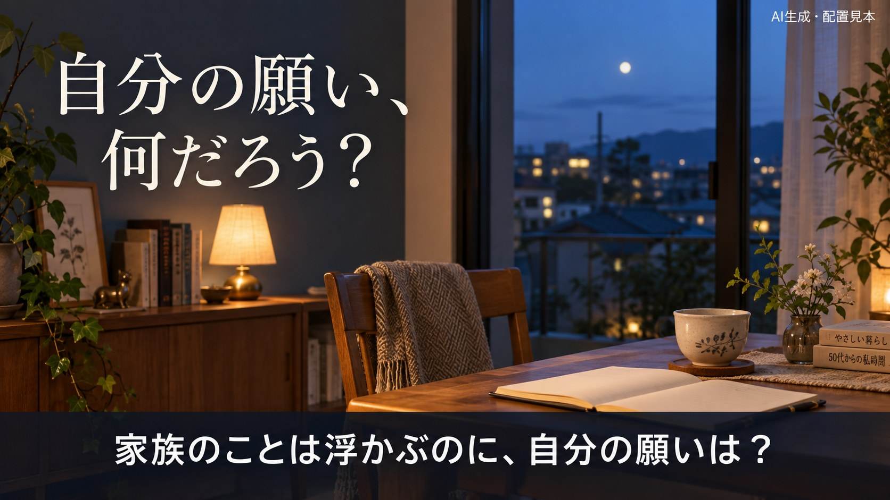
{kind=link}
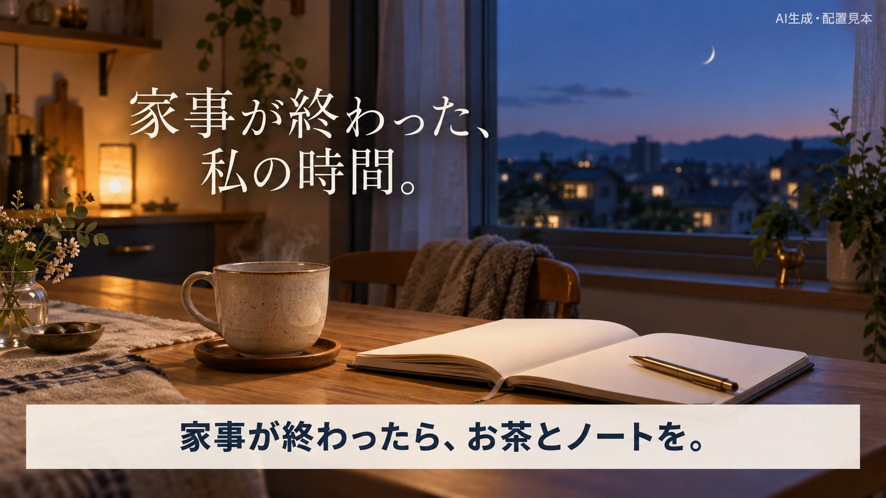
{kind=link}
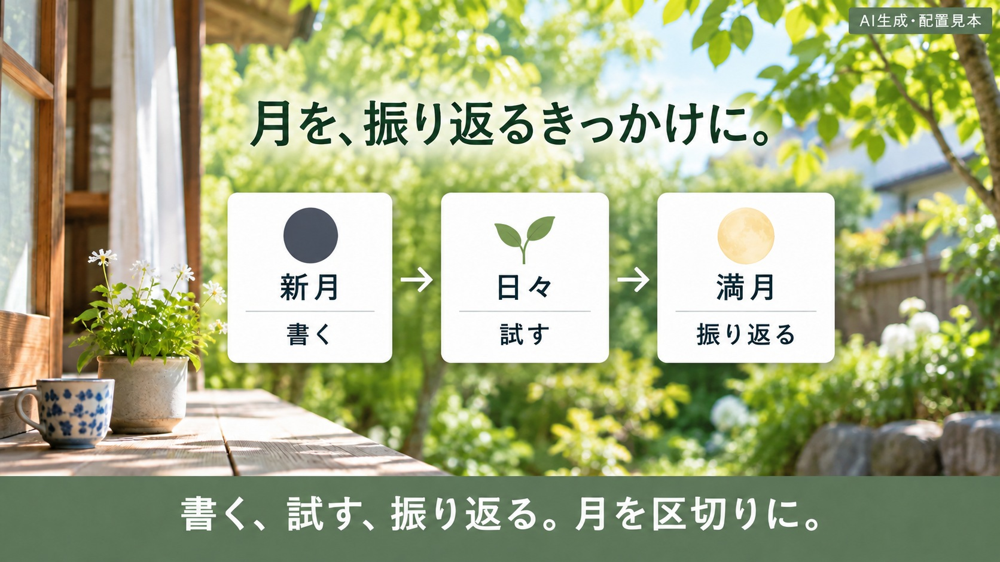
{kind=link}
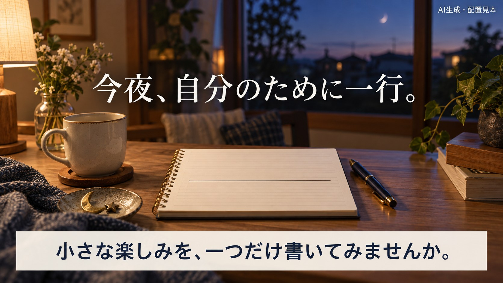
B｜月の手帖
俯瞰の静止画と紙の図解。
| 観点 | 提案内容 |
|---|---|
| 感じてほしいこと | 自分にも一行なら書けそう。正解を習うより、考えを置ける場所がある。 |
| チャンネルに合う理由 | 語り手が視聴者と一緒に考える立ち位置を、机と白紙で伝えられる。体験を捏造せず、書くワークへ進める。 |
| 配色・文字・光・質感 | 紙 #F4EEDD／墨茶 #433C35／古金 #AA9060。ほぼ真上からの俯瞰、生成りのノートを大きく。角ゴシック中心。明るい拡散光、紙の繊維・麻・鉛筆。 |
| 動画と静止画・図解 | ペン先やお茶は短い窓枠内の動画。問い、書く順番、振り返り項目は静止画。図解は手帖にカードを置くように段階表示する。 |
| 語り手・アバター | 原則なし。採用する場合は章の問いの横に小さな案内役を1回3秒程度、15分回で最大3回。手書きの吹き出しを大量に出さない。 |
| 制作の手間と継続性 | 低〜中。手帖・カード・字幕の3テンプレートを再利用しやすい。初回6〜9時間、型完成後3〜5時間という編集のみの仮見積もり。写真の連続撮影は不要。 |
| 向いているテーマ | 願いの書き方／新月から満月の振り返り／感情整理／小さく試す企画。 |
| 合わないテーマ | 旅や季節の開放感を主役にした回、天体の位置関係を精密に示す回。全編同じ机では単調になる。 |
候補素材：V2 ／ V3 ／ V7。各商品の詳細は後半にまとめています。
{kind=link}
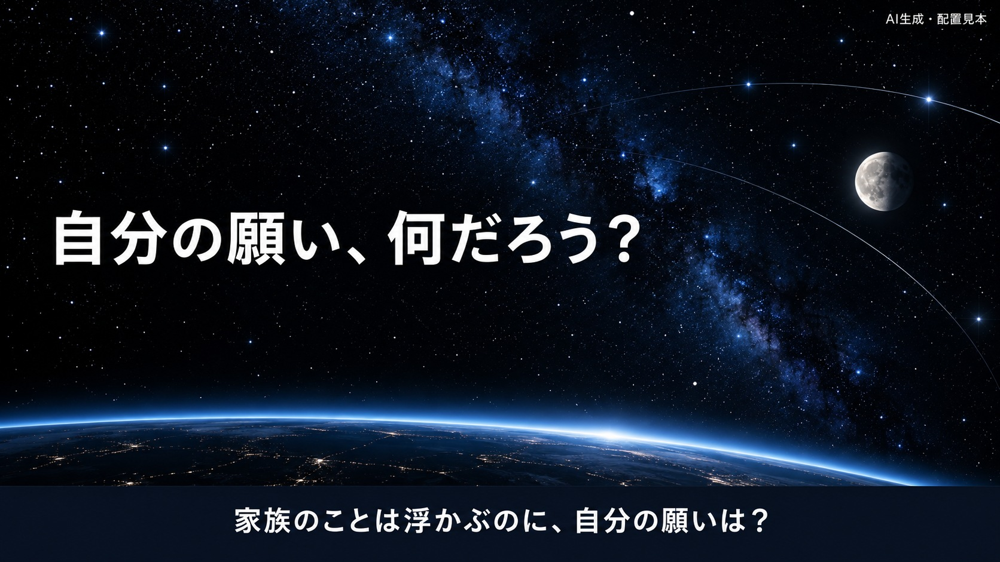
{kind=link}
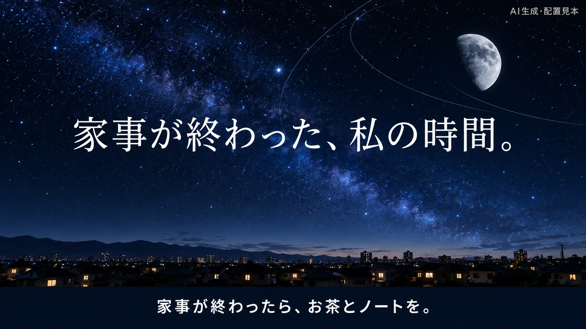
{kind=link}
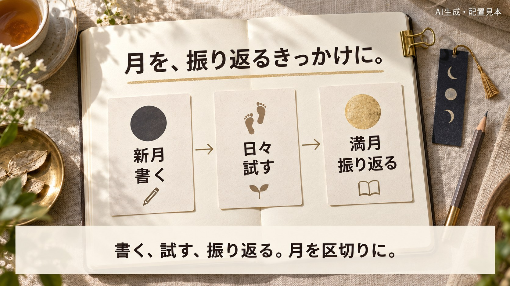
{kind=link}
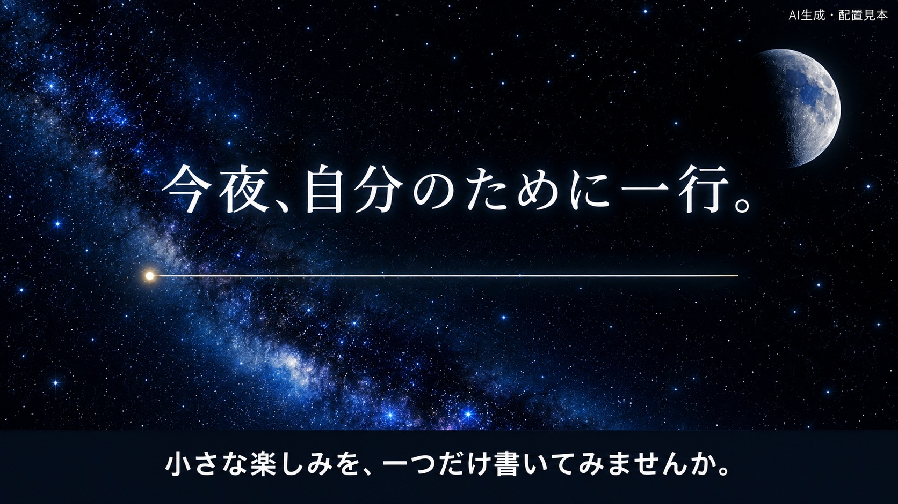
C｜暮らしと星のエッセイ
写真＋植物の線画＋紙のコラージュ。
| 観点 | 提案内容 |
|---|---|
| 感じてほしいこと | 暮らしの中に、小さな発見がある。気負わず見られる大人の読み物。 |
| チャンネルに合う理由 | 占星術を学問として構える前に、50代のあるあるから入れる。神秘性と普通の生活の距離を、写真と挿絵の組み合わせで縮める。 |
| 配色・文字・光・質感 | 白紙 #F4F1E8／青灰 #61778B／墨 #35424A／控えめな金 #AC9869。写真6・挿絵4を目安に非対称配置。薄い和紙、植物のインク線、自然光。見出し明朝・字幕角ゴシック。 |
| 動画と静止画・図解 | 写真の窓の部分だけを動画にする。感情の比喩・関係性・問いは挿絵を使う静止画。図解は余白の紙面で段階表示し、素材を同時に動かさない。 |
| 語り手・アバター | 今回はなし。採用するなら線画の小さな横顔を導入・問い返し・結びの最大3回、左の余白に画面幅8%程度。人物の顔出しは不要。 |
| 制作の手間と継続性 | 中〜高。写真と線画の質感合わせに手間がかかる。初回10〜14時間、型完成後5〜8時間という編集のみの仮見積もり。切り抜きと配置の部品化で短縮する。 |
| 向いているテーマ | 50代の気持ち／夫婦や親子／星座を性格の問いとして読む／日常の気づき。 |
| 合わないテーマ | 短時間で大量の情報を比較する回、細かな天体データ。装飾を増やすと重要な文字が埋もれる。 |
候補素材：V2 ／ V3 ／ V5。各商品の詳細は後半にまとめています。
{kind=link}
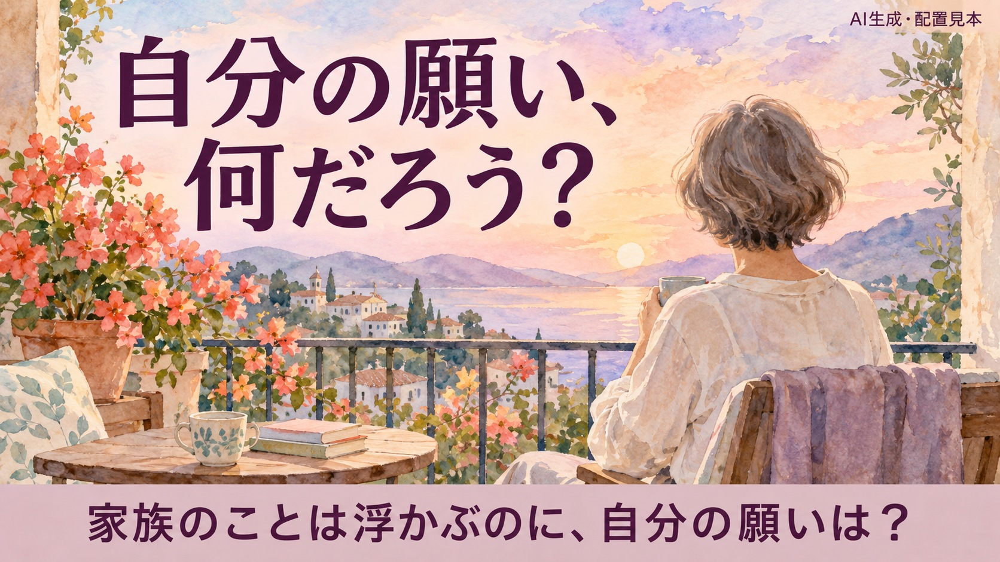
{kind=link}
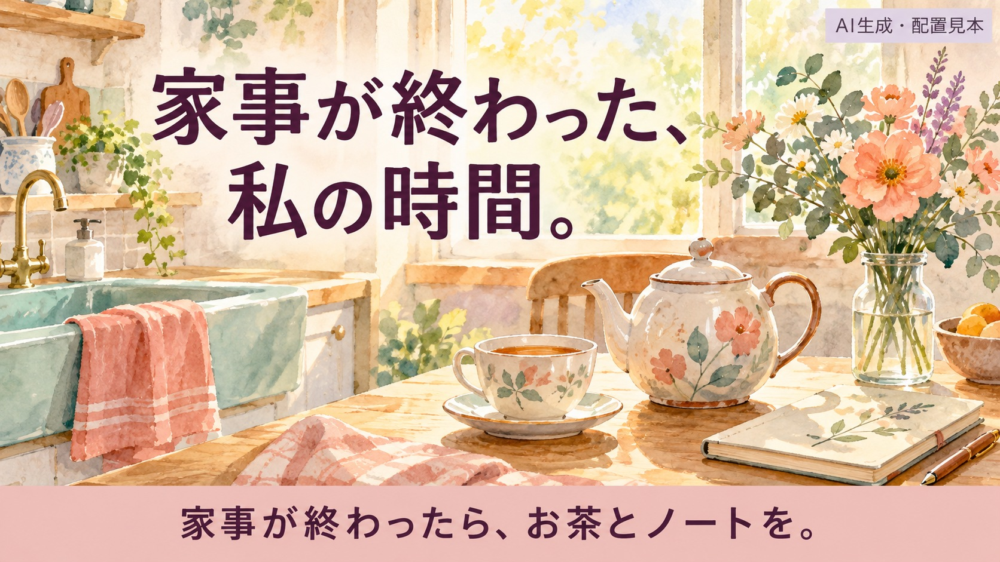
{kind=link}
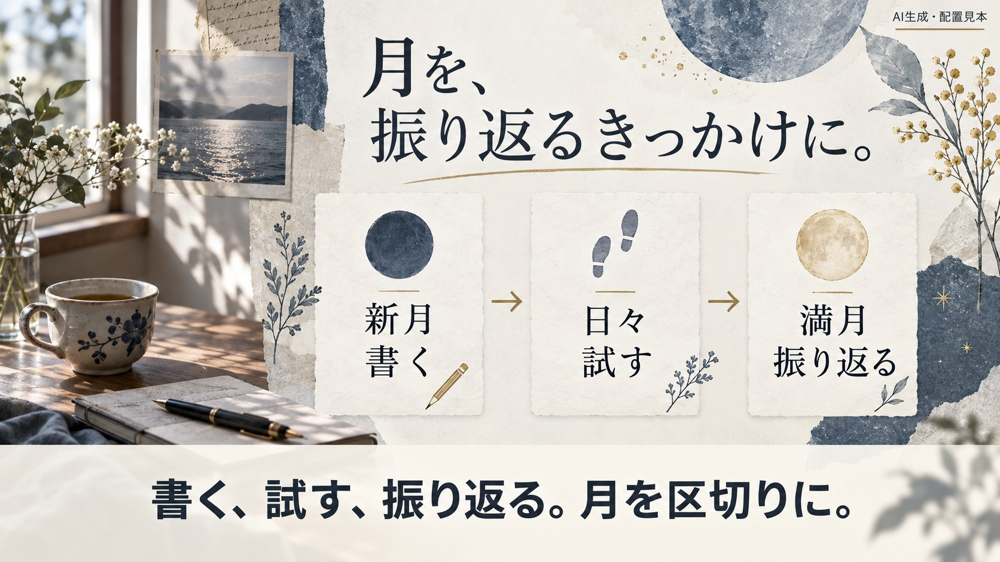
{kind=link}
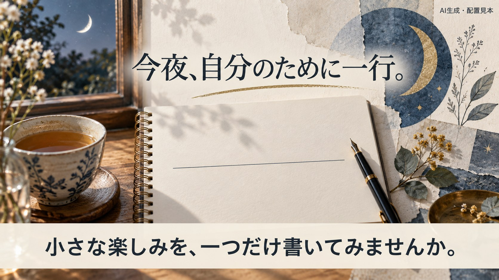
D｜大人の月刊誌
余白・文字・写真枠を分けた雑誌構成。
| 観点 | 提案内容 |
|---|---|
| 感じてほしいこと | 内容を落ち着いて整理できる。あとから見返したくなる。 |
| チャンネルに合う理由 | 専門家の説明とナビゲーターの問いを、誌面の役割として分けやすい。「先生の授業」に寄りすぎないため、見出しを答えより問いにする。 |
| 配色・文字・光・質感 | 生成り #F5F1E9／紺 #29394B／赤茶 #A26550。明朝の大見出し、角ゴシックの字幕、細い罫線。明るいマット紙。写真枠35〜40%、余白と文字60〜65%の2列構図。 |
| 動画と静止画・図解 | 誌面の写真枠内だけで、お茶・海・手元を動かす。言葉の比較やゲストの要点は静止画・図解。縦動画も細い枠に収めて活用できる。 |
| 語り手・アバター | 通常回ではなし。ゲスト回は左右の名前と役割を区別し、発言中だけ小さな肖像枠。ナビゲーターを「先生」と表示しない。常時の口パクは不要。 |
| 制作の手間と継続性 | 中。最初に余白・見出し・比較図の型を作れば引き継ぎやすい。初回7〜10時間、型完成後4〜6時間という編集のみの仮見積もり。毎回の新規誌面設計は避ける。 |
| 向いているテーマ | 新月と満月の違い／星座の考え方の比較／書籍紹介／ゲストの話を整理する回。 |
| 合わないテーマ | 余韻だけで聴かせる回。文章を載せすぎると講義資料に見え、ラジオとしての気楽さが薄れる。 |
候補素材：V2 ／ V4 ／ V7。各商品の詳細は後半にまとめています。
{kind=link}
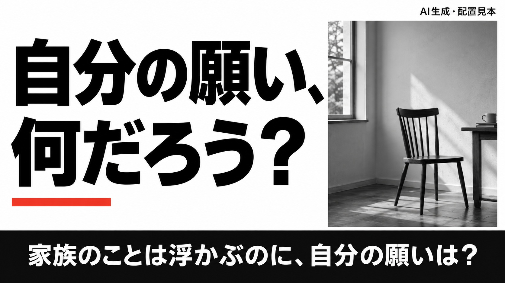
{kind=link}
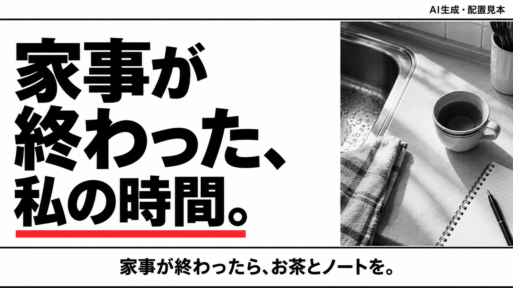
{kind=link}
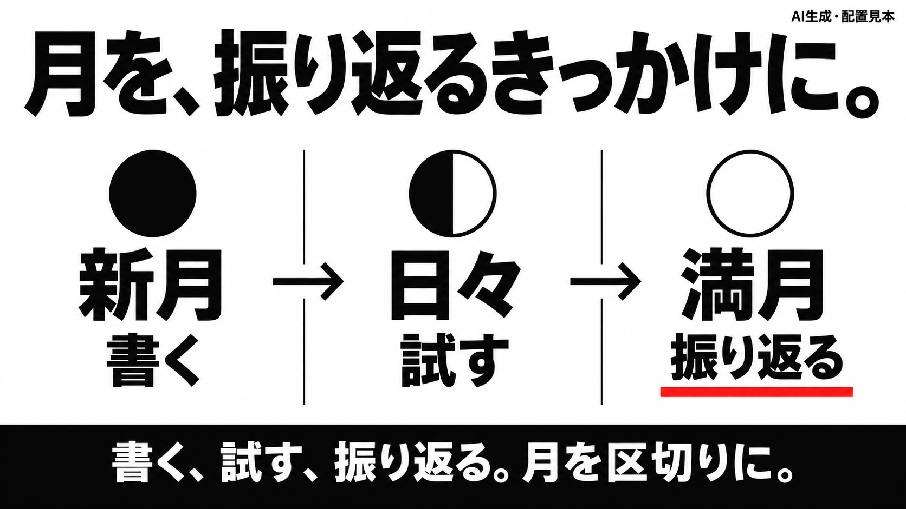
{kind=link}
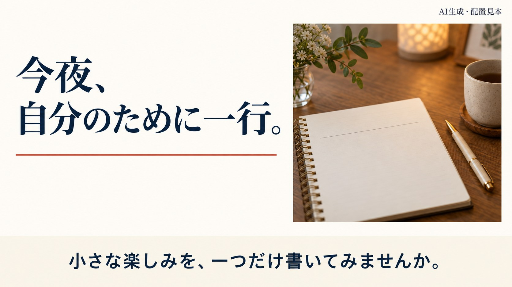
E｜和紙と月の余白
和紙・墨・切り絵の平面的な映像。
| 観点 | 提案内容 |
|---|---|
| 感じてほしいこと | 一息ついて、自分の内側に目を向けられる。静かな和の空気。 |
| チャンネルに合う理由 | 月と和の記号を強く持てる。実写の人物に頼らずチャンネル固有の見た目を作れる一方、暮らしの具体性は語りで補う必要がある。 |
| 配色・文字・光・質感 | 和紙 #F2ECDD／墨藍 #34414E／金 #B39A65。大きな余白、平面的な切り絵のカップ・ノート・窓。墨の端と紙の繊維、金の小さな円。明朝見出し・太い角ゴシック字幕。発光エフェクトは使わない。 |
| 動画と静止画・図解 | 月・水面を小さな丸窓に限定して動画化。問い・感情の比喩・月の区切りは静止画や切り絵の図解。紙全体を揺らさず、必要な部品だけ出す。 |
| 語り手・アバター | 原則なし。入れる場合は人型より小さな案内役の印を、冒頭と結びに2〜3秒ずつ。キャラクターの採用は別途決める。 |
| 制作の手間と継続性 | 中。最初の絵柄統一に時間が必要。初回8〜12時間、型完成後4〜6時間という編集のみの仮見積もり。色と紙素材を固定すると長期運用しやすい。 |
| 向いているテーマ | 満月の振り返り／気持ちの手放し／季節と暦／静かに考える短いワーク。 |
| 合わないテーマ | 具体的な体験の記録、人物対談の長尺、生活手順の説明。抽象画を実際の記録の代わりにしない。 |
候補素材：V1 ／ V4 ／ V6。各商品の詳細は後半にまとめています。
{kind=link}
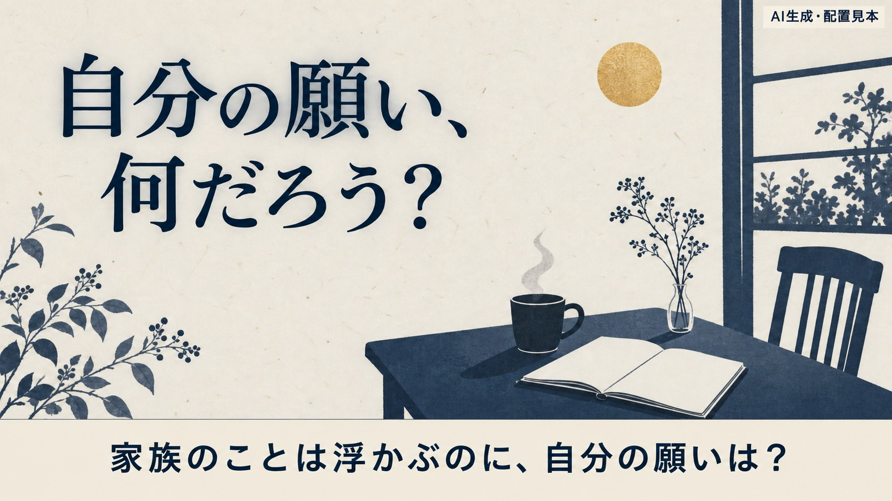
{kind=link}
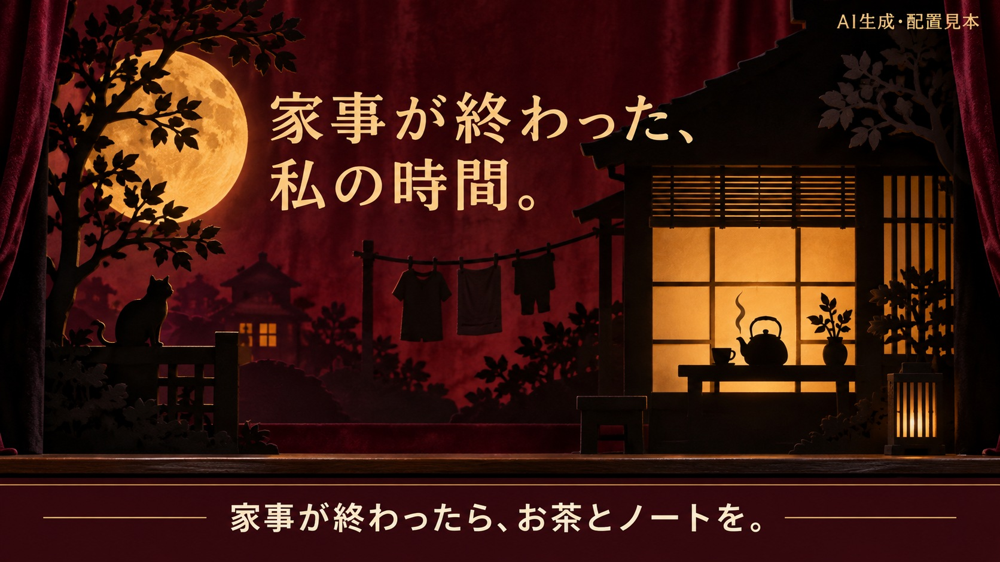
{kind=link}
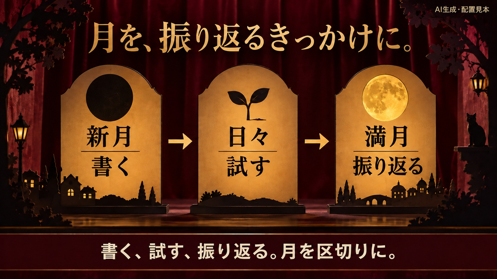
{kind=link}
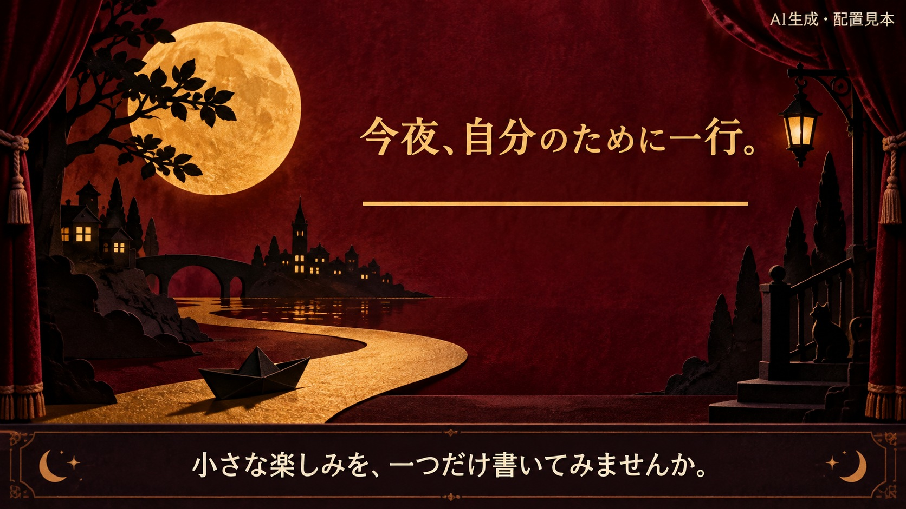
60秒の画面構成例
以下は試作の尺です。最初に読み上げ音声を録り、文末・問いの間・図解の読み終わりに合わせて調整します。6つの発話は5案共通で、合計218文字。60秒内に読み上げと図解の確認時間を収める想定です。録音による秒単位の実測はまだ行っていません。
表の字幕欄は代表句です。本番は全文を字幕にし、表にない接続部分も音声に合わせて表示します。「／」は改行または次の字幕への切り替え候補です。字幕は動かさず、背景の寄りとは別に固定します。動画の元音は原則ミュートし、語りと一つの静かな音楽を中心にします。
A 月明かりの窓辺｜60秒
表は左右にスクロールできます。
| 秒数 | 話す内容 | 区分 | 使う素材 | 画面の動き | 字幕の代表句 |
|---|---|---|---|---|---|
| 0〜8秒 | 家族の願いなら、すぐ浮かぶ。けれど、自分の願いはどうでしょう。 | 静止画 | A1 | 問いを出して静止。最後に1秒の間。 | 家族の願いなら、すぐ浮かぶ。／けれど、自分の願いは？ |
| 8〜17秒 | 家事が終わったあと、お茶とノートを置いてみる。今日は、自分のための時間です。 | 静止画 | A2 | 背景だけ100→102%にゆっくり寄る。字幕は固定。 | 家事が終わったあと、／お茶とノートを。 |
| 17〜29秒 | 「願いを書いて」と言われても、急には出てきませんよね。まずは月を、振り返る区切りとして使ってみます。 | 動画＋文字 | V1（小窓）＋生成りの文字面 | 音声はつないだまま月の小窓へ。問いの文が終わると文字面に移る。 | 急には出てきませんよね。／月を、振り返る区切りに。 |
| 29〜46秒 | 新月に書く。日々、ひとつ試す。満月に振り返る。この三つを、無理のない範囲で繰り返します。 | 図解 | A3を元にした3カード図解 | 新月→日々→満月を各発話で追加。約8秒で揃え、残り約9秒は全体を保持。図は拡大しない。 | 新月に書く。日々、試す。／満月に振り返る。 |
| 46〜53秒 | 大きな夢でなくても、かまいません。小さな楽しみから。 | 静止画 | A4 | 図解からノートへ0.4秒で切り替え。寄りを止める。 | 大きな夢でなくても、／かまいません。 |
| 53〜60秒 | 今夜、自分のためにできることを、一行だけ書いてみませんか。 | 静止画 | A4を保持 | 同じ画を保持して空白の一行を見せる。字幕が読み終わってから約1秒の余韻。 | 今夜、自分のために／一行だけ書いてみませんか。 |
B 月の手帖｜60秒
表は左右にスクロールできます。
| 秒数 | 話す内容 | 区分 | 使う素材 | 画面の動き | 字幕の代表句 |
|---|---|---|---|---|---|
| 0〜8秒 | 家族の願いなら、すぐ浮かぶ。けれど、自分の願いはどうでしょう。 | 静止画 | B1 | 真上のノートに問いを置く。背景は止める。 | 家族の願いなら、すぐ浮かぶ。／けれど、自分の願いは？ |
| 8〜17秒 | 家事が終わったあと、お茶とノートを置いてみる。今日は、自分のための時間です。 | 動画＋静止画 | V2を手帖右の縦枠に／B2の紙背景 | お茶だけ動く。紙面と字幕は固定し、動画音声は使わない。 | 家事が終わったあと、／お茶とノートを。 |
| 17〜28秒 | 「願いを書いて」と言われても、急には出てきませんよね。まずは月を、振り返る区切りとして使ってみます。 | 静止画 | B2 | 『急には出てこない』で白紙へ切る。無理にページめくりを足さない。 | 急には出てきませんよね。／月を、振り返る区切りに。 |
| 28〜46秒 | 新月に書く。日々、ひとつ試す。満月に振り返る。この三つを、無理のない範囲で繰り返します。 | 図解 | B3を元にした紙カード図解 | 3カードを順に置く。約8秒で完成後10秒保持。強調は金の下線1か所だけ。 | 新月に書く。日々、試す。／満月に振り返る。 |
| 46〜53秒 | 大きな夢でなくても、かまいません。小さな楽しみから。 | 動画＋静止画 | V3を小さな写真枠に | 筆記のイメージを短く挿入。見本の英語を願いの内容として読まない。 | 大きな夢でなくても、／かまいません。 |
| 53〜60秒 | 今夜、自分のためにできることを、一行だけ書いてみませんか。 | 静止画 | B4 | 白紙の一行へ戻る。背景・字幕位置は固定して結びを聴かせる。 | 今夜、自分のために／一行だけ書いてみませんか。 |
C 暮らしと星のエッセイ｜60秒
表は左右にスクロールできます。
| 秒数 | 話す内容 | 区分 | 使う素材 | 画面の動き | 字幕の代表句 |
|---|---|---|---|---|---|
| 0〜8秒 | 家族の願いなら、すぐ浮かぶ。けれど、自分の願いはどうでしょう。 | 静止画 | C1 | 写真は100→102%の寄り。植物と文字は止める。 | 家族の願いなら、すぐ浮かぶ。／けれど、自分の願いは？ |
| 8〜18秒 | 家事が終わったあと、お茶とノートを置いてみる。今日は、自分のための時間です。 | 動画＋挿絵 | V2を縦枠に／C2の植物線画 | 枠の中のお茶だけ動く。紙の縁で写真と絵をつなぐ。 | 家事が終わったあと、／お茶とノートを。 |
| 18〜30秒 | 「願いを書いて」と言われても、急には出てきませんよね。まずは月を、振り返る区切りとして使ってみます。 | 静止画 | C2 | 話の問い返しで明るい紙面へ切る。葉を揺らす演出は足さない。 | 急には出てきませんよね。／月を、振り返る区切りに。 |
| 30〜47秒 | 新月に書く。日々、ひとつ試す。満月に振り返る。この三つを、無理のない範囲で繰り返します。 | 図解 | C3の紙面に3カード | 線画を薄くしてカードを順に出す。約8秒の段階表示、9秒の全体保持。 | 新月に書く。日々、試す。／満月に振り返る。 |
| 47〜53秒 | 大きな夢でなくても、かまいません。小さな楽しみから。 | 動画＋挿絵 | V3を写真の窓に | 手元だけを動かし、余白に『小さな楽しみ』。 | 大きな夢でなくても、／かまいません。 |
| 53〜60秒 | 今夜、自分のためにできることを、一行だけ書いてみませんか。 | 静止画 | C4 | ノートの一行を中央に。視線を散らす装飾は増やさず保持。 | 今夜、自分のために／一行だけ書いてみませんか。 |
D 大人の月刊誌｜60秒
表は左右にスクロールできます。
| 秒数 | 話す内容 | 区分 | 使う素材 | 画面の動き | 字幕の代表句 |
|---|---|---|---|---|---|
| 0〜8秒 | 家族の願いなら、すぐ浮かぶ。けれど、自分の願いはどうでしょう。 | 静止画 | D1 | 左の問いを先に表示し、写真は静止。 | 家族の願いなら、すぐ浮かぶ。／けれど、自分の願いは？ |
| 8〜17秒 | 家事が終わったあと、お茶とノートを置いてみる。今日は、自分のための時間です。 | 動画＋文字 | V2を右側の縦長写真枠に | 左の見出しは固定、右だけ動画。全面のズームはしない。 | 家事が終わったあと、／お茶とノートを。 |
| 17〜28秒 | 「願いを書いて」と言われても、急には出てきませんよね。まずは月を、振り返る区切りとして使ってみます。 | 静止画 | D2 | 『急には』の文の切れ目で写真を紙面へ。左列の役割を保つ。 | 急には出てきませんよね。／月を、振り返る区切りに。 |
| 28〜47秒 | 新月に書く。日々、ひとつ試す。満月に振り返る。この三つを、無理のない範囲で繰り返します。 | 図解 | D3の3項目図解 | 三つの要点を発話に合わせて追加。約9秒で完成、10秒保持。字幕と図の間に余白。 | 新月に書く。日々、試す。／満月に振り返る。 |
| 47〜53秒 | 大きな夢でなくても、かまいません。小さな楽しみから。 | 静止画 | D4 | 図を外して一行の見出しとノート写真に戻す。 | 大きな夢でなくても、／かまいません。 |
| 53〜60秒 | 今夜、自分のためにできることを、一行だけ書いてみませんか。 | 静止画 | D4を保持 | 切り替えず同じ誌面で結ぶ。文末を読み終えたら1秒保持。 | 今夜、自分のために／一行だけ書いてみませんか。 |
E 和紙と月の余白｜60秒
表は左右にスクロールできます。
| 秒数 | 話す内容 | 区分 | 使う素材 | 画面の動き | 字幕の代表句 |
|---|---|---|---|---|---|
| 0〜8秒 | 家族の願いなら、すぐ浮かぶ。けれど、自分の願いはどうでしょう。 | 静止画 | E1 | 和紙の大きな余白に問い。全体は完全に静止。 | 家族の願いなら、すぐ浮かぶ。／けれど、自分の願いは？ |
| 8〜17秒 | 家事が終わったあと、お茶とノートを置いてみる。今日は、自分のための時間です。 | 静止画 | E2 | 湯気の線だけを0.8秒かけて表示。その後は止める。 | 家事が終わったあと、／お茶とノートを。 |
| 17〜29秒 | 「願いを書いて」と言われても、急には出てきませんよね。まずは月を、振り返る区切りとして使ってみます。 | 動画＋切り絵 | V1を小さな丸窓に／和紙背景 | 月の丸窓だけ動く。月映像の前後は0.4秒の切り替え。 | 急には出てきませんよね。／月を、振り返る区切りに。 |
| 29〜47秒 | 新月に書く。日々、ひとつ試す。満月に振り返る。この三つを、無理のない範囲で繰り返します。 | 図解 | E3の切り絵3カード | 新月・日々・満月の札を約8秒で出し、10秒保持。紙や金粉を常時動かさない。 | 新月に書く。日々、試す。／満月に振り返る。 |
| 47〜53秒 | 大きな夢でなくても、かまいません。小さな楽しみから。 | 静止画 | E4 | 切り絵の白紙ノートへ。文字だけを1回表示。 | 大きな夢でなくても、／かまいません。 |
| 53〜60秒 | 今夜、自分のためにできることを、一行だけ書いてみませんか。 | 静止画 | E4を保持 | 動かさず一行を考える間を作る。BGMを少し下げて言葉を残す。 | 今夜、自分のために／一行だけ書いてみませんか。 |
動画素材の公式プレビュー・購入候補
異なる動画7件を選び、各世界観に3件ずつ対応させました。確認日は2026年9月19日です。個別の公式ページへのリンクからプレビュー・取得条件へ進めます。この資料には動画ファイルを再配布・埋め込みしていません。
V1・V2・V3は公式プレーヤーの一部再生を目視確認しました。V4〜V7は商品説明の確認で、映像を見たとは扱っていません。公開前には採用素材の全尺・音声・継ぎ目・利用条件を編集担当が確認してください。
V1 Clouds Passing The Moon
| 項目 | 確認内容 |
|---|---|
| 提供元・素材ID | Pexels / Luis Medina Diseño／1051550 |
| 映るもの・動き | 月の前を雲が横切る夜空。プレビューの複数フレームで雲の位置変化を確認。 |
| 合わせる話 | 「月を区切りに、自分を振り返る」という導入。新月そのものを説明する箇所には満月の映像を置かない。 |
| 合う世界観 | A 月明かりの窓辺／E 和紙と月の余白 |
| 確認した仕様 | 1280×720／16:9／2分03秒／30fps |
| 価格・区分・条件 | 無料（0米ドル）。Pexels公式ページの無料ダウンロード表記を確認。 |
| チーム・外注での確認 | 公式ライセンスと取得日・素材IDを案件台帳に保存。商用編集可・クレジット任意。無加工素材の再販売や素材サイトへの再配布は不可。外注には公式取得先を渡し、素材そのものを公開配布しない。人物・ブランドの推薦を示す使い方は避け、権利の追加確認が必要な写り込みを確認。 |
| 確認段階 | 公式プレビューの一部再生を目視確認。全尺の連続視聴は未実施。 |
| 採用判断 | 720p。フルHD画面では小窓利用を優先。全面・寄りが必要ならV6を再生確認後に比較。 |
V2 A cup of tea and a teapot on a window sill
| 項目 | 確認内容 |
|---|---|
| 提供元・素材ID | Pexels / Emrah／16938568 |
| 映るもの・動き | 雨の窓辺にティーポットとカップ。再生でカップの水面・滴の変化が見える。湯気だけを見せる素材ではない。 |
| 合わせる話 | 「家事が終わったあと、お茶とノートを置く」のお茶の情景。 |
| 合う世界観 | B 月の手帖／C 暮らしと星のエッセイ／D 大人の月刊誌 |
| 確認した仕様 | 1080×1920／9:16（縦）／26秒／59.94fps |
| 価格・区分・条件 | 無料（0米ドル）。Pexels公式ページで確認。 |
| チーム・外注での確認 | 公式ライセンスと取得日・素材IDを案件台帳に保存。商用編集可・クレジット任意。無加工素材の再販売や素材サイトへの再配布は不可。外注には公式取得先を渡し、素材そのものを公開配布しない。人物・ブランドの推薦を示す使い方は避け、権利の追加確認が必要な写り込みを確認。 |
| 確認段階 | 公式プレーヤーを操作し一部再生を目視確認。全尺の連続視聴は未実施。 |
| 採用判断 | 横画面への無理な全面拡大はしない。B/C/Dの写真枠に収める。外の建物を日本の実生活と断定しない。 |
V3 A Person Writing on a Journal
| 項目 | 確認内容 |
|---|---|
| 提供元・素材ID | Pexels / Taryn Elliott／9683116 |
| 映るもの・動き | 指輪のある手とペン先の接写。英語が書かれたノートに筆記し、ペンが離れる動きを確認。 |
| 合わせる話 | 「一行だけ書いてみる」「小さく試す」。本人の実践記録ではなく筆記のイメージ。 |
| 合う世界観 | B 月の手帖／C 暮らしと星のエッセイ |
| 確認した仕様 | 3840×2160／16:9／17秒／25fps |
| 価格・区分・条件 | 無料（0米ドル）。Pexels公式ページで確認。 |
| チーム・外注での確認 | 公式ライセンスと取得日・素材IDを案件台帳に保存。商用編集可・クレジット任意。無加工素材の再販売や素材サイトへの再配布は不可。外注には公式取得先を渡し、素材そのものを公開配布しない。人物・ブランドの推薦を示す使い方は避け、権利の追加確認が必要な写り込みを確認。 |
| 確認段階 | 公式プレビューの一部再生を目視確認。全尺の連続視聴は未実施。 |
| 採用判断 | 英語の内容を日本語の願い事として紹介しない。文字内容が重要な回は白紙の自作図解、または任意の実物撮影へ。 |
V4 Glittering Moonlight on Ocean Waves at Night
| 項目 | 確認内容 |
|---|---|
| 提供元・素材ID | Pexels / Mario Krimer／32864351 |
| 映るもの・動き | 夜の波に月明かりがきらめくと商品説明にある。実際の動く速さやループの継ぎ目は未確認。 |
| 合わせる話 | 問いを置いたあとの余韻、満月の振り返り、章のつなぎ。 |
| 合う世界観 | A 月明かりの窓辺／D 大人の月刊誌／E 和紙と月の余白 |
| 確認した仕様 | 1920×1080／16:9／30秒／24fps |
| 価格・区分・条件 | 無料（0米ドル）。公式商品説明と無料提供を確認。 |
| チーム・外注での確認 | 公式ライセンスと取得日・素材IDを案件台帳に保存。商用編集可・クレジット任意。無加工素材の再販売や素材サイトへの再配布は不可。外注には公式取得先を渡し、素材そのものを公開配布しない。人物・ブランドの推薦を示す使い方は避け、権利の追加確認が必要な写り込みを確認。 |
| 確認段階 | 商品説明・仕様だけ確認。再生は未確認。 |
| 採用判断 | 波動や心への効果の証拠映像としては扱わない。 |
V5 A view of a window with rain falling through it
| 項目 | 確認内容 |
|---|---|
| 提供元・素材ID | Pexels / Nothing Ahead／9494948 |
| 映るもの・動き | 雨粒のある窓の情景と商品説明にある。カメラの揺れ・速度は再生前のため未確認。 |
| 合わせる話 | 「自分の願いが浮かばない」という迷い、気持ちを言葉にする前の間。 |
| 合う世界観 | C 暮らしと星のエッセイ |
| 確認した仕様 | 1920×1080／16:9／2分59秒／25fps |
| 価格・区分・条件 | 無料（0米ドル）。公式商品説明と無料提供を確認。 |
| チーム・外注での確認 | 公式ライセンスと取得日・素材IDを案件台帳に保存。商用編集可・クレジット任意。無加工素材の再販売や素材サイトへの再配布は不可。外注には公式取得先を渡し、素材そのものを公開配布しない。人物・ブランドの推薦を示す使い方は避け、権利の追加確認が必要な写り込みを確認。 |
| 確認段階 | 商品説明・仕様だけ確認。再生は未確認。 |
| 採用判断 | 暗い雨景色を長く続けない。Cの小窓で短く使い、次の明るい紙面につなぐ。 |
V6 Full Moon Shining Through the Night Clouds
| 項目 | 確認内容 |
|---|---|
| 提供元・素材ID | Envato Elements / 02lab／469JVL9 |
| 映るもの・動き | 満月に雲がかかる夜空。商品説明上の内容で、プレビューの再生は未確認。 |
| 合わせる話 | Aの月の導入、Eの丸窓。高解像度で月の情景を使いたい場合の購入候補。 |
| 合う世界観 | A 月明かりの窓辺／E 和紙と月の余白 |
| 確認した仕様 | 4096×2160／256:135（約1.90:1、16:9より横長）／1分00秒／24fps／Photo JPEG／1.6GB／ループ素材ではない |
| 価格・区分・条件 | 定額契約。Coreは公式料金ページで月額換算16.50米ドル〜。契約期間・税・請求総額・チーム席の見積もりは未確認。単品価格は未確認。 |
| チーム・外注での確認 | 1つのライセンスは1つの完成プロジェクト。別動画への再利用は追加ライセンスを発行。契約中に完成した作品は解約後も既存利用可。外注者の利用席・素材引渡し・契約主体はTeams条件で確認し、アカウント共有を前提にしない。 |
| 確認段階 | 商品ページ・仕様・料金・一般ライセンスを確認。再生未確認（取得したページに動画利用不可の表示）。 |
| 採用判断 | 初回購入を確定する候補ではない。購入前に本人のブラウザで再生・希望画角・契約席を確認。 |
V7 Notebook, Writing, Hands, Warm Light
| 項目 | 確認内容 |
|---|---|
| 提供元・素材ID | Artlist / Continuous Content／345902 |
| 映るもの・動き | 暖色の光の中のノートと筆記する手という商品名。実際の動き・文字・手元の写り方は未確認。 |
| 合わせる話 | B/Dの書く場面。無料V3の英語や接写が合わないとき、同一シリーズの統一感を比較する。 |
| 合う世界観 | B 月の手帖／D 大人の月刊誌 |
| 確認した仕様 | 解像度・縦横比・長さ・fpsは未確認。 |
| 価格・区分・条件 | 定額契約の候補。Footageを含む対象プランの金額・契約期間・税・単品購入可否は未確認。 |
| チーム・外注での確認 | 会社運営・クライアント案件はPro系の適用範囲を確認。Socialの個人向け契約でよいと判断しない。Footageの収録、外注編集の席、素材受渡しを確認。契約中に完成・公開した作品の既存利用と、解約後の新規制作を分けて管理する。 |
| 確認段階 | 公式商品名・作者・シリーズと一般ライセンスのみ確認。再生・個別仕様は未確認。 |
| 採用判断 | 優先度は低い。まずプレビュー・仕様・見積もりが揃ってから候補を確定する。 |
素材の調達方針と購入優先度
当面の主力素材サイトは Pexels を推薦します。日常の動き・月・水面を必要な箇所にだけ使い、主画面は今回のような静止画と自作図解で構成すれば、初回から定額契約を増やす必要はありません。Aを主力にする場合も、写真風のAI背景とPexelsの短い動きで試作できます。
有料契約を1つ増やすときの第一候補は Envato Elements Core です。月の高解像度素材に加えて、映像・写真・図形素材などをまとめて比較できるためです。ただしV6は再生未確認なので、現時点で契約確定を勧めるものではありません。Artlistは同一撮影シリーズの統一感が必要になった段階の比較候補に留めます。
表は左右にスクロールできます。
| 優先度 | 調達するもの | 判断と具体的な候補 |
|---|---|---|
| 1：初回は無料で確認 | 日常の筆記・お茶、月の小窓 | V1・V2・V3。V2は縦枠、V3は英語の筆記という制約込みで使用 |
| 1：自作する | 月の区切り、星座の要点、問いの文字画面 | 図形・文字を編集可能なレイヤーで作る。今回の③は3カードの共通型にできる |
| 1：AI生成に適する | 同じ部屋の窓辺、人物を特定しない情景、和紙・挿絵 | 画の統一感を作る。生成された文字や本を根拠にしない。正式字幕は編集ソフトで組む |
| 2：無料素材を追加 | 水面・雨景色など章間の情景 | V4・V5を全尺再生して、速度や明るさが合う場合だけ採用 |
| 3：有料を検討 | 全面で使える高解像度の月 | Envato V6を再生確認し、無料V1では画質不足のカットがある場合にCoreの契約条件を見積もる |
| 4：有料のシリーズを比較 | 色・場所・小物が揃った手元映像 | Artlist V7。プレビュー・仕様・Footageを含むプラン料金を確認してから判断 |
| 必要な回だけ任意撮影 | 日本語の実際のノート、実際に試した物や記録 | カメラ固定の手元だけでよい。顔出し・毎回の撮影は必須にしない。本人の経験を扱う場合だけ実物にする |
| 初回は買わない | 大量の星座CG、宇宙トンネル、光る波動素材、常時口パクのアバター、高額な編集効果集 | 今回の差別化と可読性に直結しない。複数サイトの同時契約、上位AIプランも必要性が出てから |
金額は契約確定額ではありません。Envatoの月額換算表記を月払いの請求額と解釈せず、期間・税込総額・利用席・更新条件を見積もってから契約します。本作業では購入・無料試用の申込・外注への送信を行っていません。
ライセンス確認の根拠：Pexels公式ライセンス／Envato料金／Envatoライセンス入門／Envato Teamsの確認先／Artlist公式ライセンス解説。Teams個別席条件の最終確認は未実施です。
通常回とゲスト回で変えること
通常回は、視聴者の疑問を先に置きます。「月の何が効くか」を権威的に説明するより、「今の自分に、どんな問いとして使えるか」をナビゲーターが言葉にします。十二星座や占星術の専門回でも、最初から12項目の一覧を見せず、今話している1〜3項目に絞ります。
ゲスト回は「ナビゲーターの問い」「専門家の説明」「視聴者が選べる次の行動」を区別します。顔出しの収録可否は別途決定で、肖像の静止画と音声だけでも構成できます。商品案内ではゲスト名・提供商品・案内先を明示し、ナビゲーター自身の成果や講座に見せません。今回の60秒例には未決定の商品や販売条件を入れていません。
未確認事項と、担当者が次に決めること
| 未確認・未決定 | 本資料での扱い／次の判断 |
|---|---|
| 正式名称、声の担当、アバターの採否 | 今回はコンセプト名・落ち着いた声・人物なしの見本。初回収録前に決める |
| 本番台本と扱う書籍の本文 | 完成台本なし。今回の218文字は比較用新規例。書籍・研究を扱う回は原本の該当箇所を確認する |
| 日付・新月満月の時刻・星座の解釈 | 今回は特定日付を使わない。実際の配信回で暦と出典を照合する |
| V4〜V7の再生、V7の仕様 | 説明確認の候補として掲載。採用前に全尺の動き・文字・画角を確認する |
| V6のプレビュー利用不可表示 | 有料候補の保留理由。再生できない状態で契約しない |
| 契約・税・外注者の席 | 既存契約は不明。新規契約の前に会社名義・担当席・受渡し範囲を確認する |
| 生成画像の本番用レイヤー | 現在は構図と字幕の見本。字幕と図解は本番の編集データで再組版する |
| 視聴者による見やすさ、編集工数、視聴維持率 | 今回は制作上の比較。Aの60秒を試作し、50代の試聴者が字幕と図解を読み切れるか確認する |
読解した資料と制作物
以下は本文を照合した資料です。同期ミラーは変更せず、移動後の正本フォルダを参照しました。
- チャンネル企画まとめ：ターゲット・軸・差別化・ゲスト商品への導線。
- チャンネル設定：未決定欄を確認。今回の提案を決定事項として埋めていません。
- 制作フォーマット標準：声・語り・字幕・テンポの既存方針。今回の依頼を優先して意味単位の切り替えに調整。
- 動画台本フォルダ：完成台本がないことを確認。
- 編集素材フォルダ：共有するものと原素材の管理方針。
- 国内海外ライバル10選とジャンル再評価：月・星の軸と隣接ジャンルの位置づけ。
- 全チャンネルの映像世界観と素材購入候補：共通方針・スピリチュアル該当節・調達条件を参照。他チャンネルの全本文を今回の読解対象とはしていません。
共有物は、この説明資料、比較ページ、20枚の画像、一式ZIPです。動画は制作していません。生成プロンプト・素材候補・60秒構成は原本と同じフォルダに保存しています。